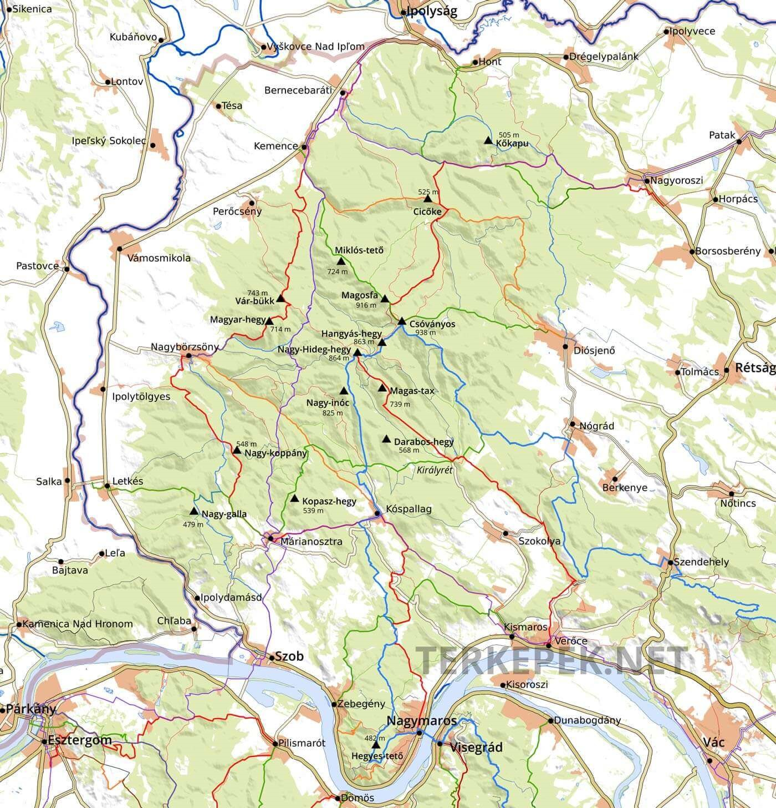
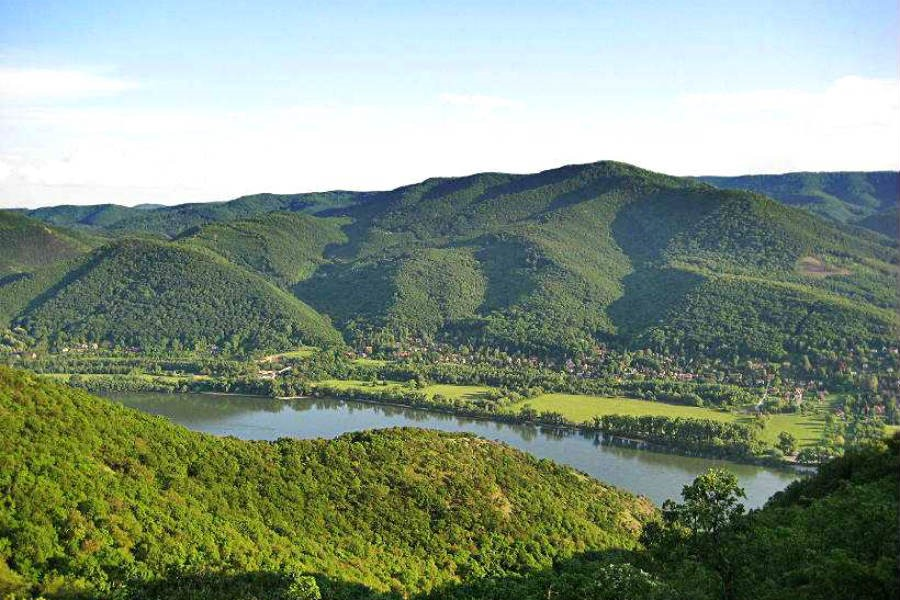
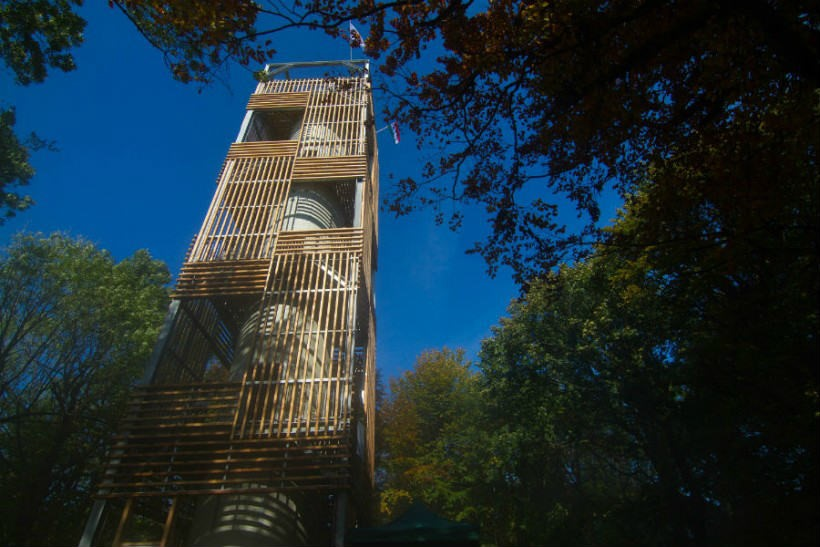
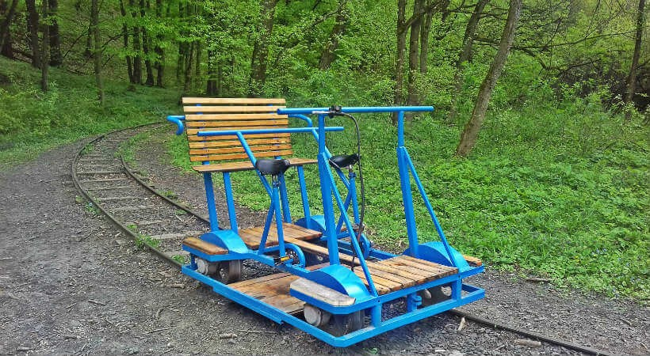

Elhelyezkdés:
A Bükk-vidék az Északi-középhegységben található földrajzi középtáj, Magyarország legnagyobb átlagmagasságú, barlangokban bővelkedő karszthegysége. Középső területe 1977 óta nemzeti park . Nevét leggyakoribb fájáról, a bükkről kapta. Az Északi-középhegység egyetlen olyan hegysége, amely nem vulkanikus eredetű. A Bükk-vidéken található Magyarország legnagyobb összefüggő erdőterülete, közel 100 000 hektár.

Csóványosi kilátó
Mint már említettük, a Csóványos a Börzsöny legmagasabb csúcsa. Kezdjétek a Börzsöny megismerését a legmagasabb pont meghódításával! 2013 őszén az Ipoly Erdő Zrt. megkezdte a korábbi betontorony kilátóvá alakítását, biztonságos lépcsőkkel látták el, így 2014. óta nemcsak látogatható a 938 méter magasan elhelyezkedő építmény, de a turisták kedvenc célpontja is. 133 gyilkos lépcsőfokot megmászva érhetitek el a legfelső teraszt, ami 22,5 méterrel van magasabban, mint a bejárati talajszint. A tetejéről remek körpanoráma tárul a látogatók szeme elé, biztosak vagyunk benne, hogy ti is imádni fogjátok! Jó időben, kedvező látási viszonyok mellett a Magas-Tátra is látható. A hegyre számos turistaút vezet, a legfontosabb az Országos Kéktúra kék sáv jelzése. Királyrétre érdemes erdei vasúttal érkezni, a kilátó a királyréti központi parkolótól 10 km (3 óra) távolságra található. A szintkülönbség (783 m) miatt gyakorlottabb túrázóknak ajánlják a távot, gyerekekkel érdemes rövidebb túrát beiktatni. A Csóványosi kilátóról bővebben ide kattintva tájékozódhattok.
Királyrét
Ha szívesen zötyögnétek erdei kisvasúttal, akkor járjátok körbe vonattal a Börzsönyt! Maradjunk még Királyréten egy kicsit. A 120 éves Királyréti Erdei Vasút a Morgó patak völgyében halad Kismarostól Szokolya községen át Királyrétig, jó hír, hogy munka-, ünnep-, és hétköznapokon egyaránt közlekedik. (Útvonal: Kismaros – Morgó – Szokolya – Paphegy – Királyrét, információ: 06-20/852-4512 mindennap hívható 9-18 óra között) A menetrendet érdemes elolvasni azért indulás előtt.
Nagybörzsöny
Gyönyörű, csendes környezetben fekszik a falu, ahol a 13. századi Szent István templomtól a vízimalmon át a kis sajtos házig mindent érdemes megnézni, az erdő végtelen nyugalmáról nem beszélve. Ha még van időtök és erőtök, érdemes felkeresni a helyi kosárfonó és szőnyegszövő népművészeket, de ne hagyjátok ki a helyi különlegességeket se.

Börzsöny hegység Magyarország északi részén, Pest és Nógrád megyében fekszik. Legmagasabb csúcsa a Csóványos (938 m), ezt követi a Magos-fa (916 m), és a Nagy-Hideg-hegy (864 m). A Börzsönyben bejárhatjátok a legszebb kilátókat, vonatozhattok, megnézhetitek a környék múzeumait, biciklizhettek, a lehetőségek tárháza végtelen. Csapjatok a lovak közé, irány a szabad levegő!
Csóványosi kilátó
Mint már említettük, a Csóványos a Börzsöny legmagasabb csúcsa. Kezdjétek a Börzsöny megismerését a legmagasabb pont meghódításával! 2013 őszén az Ipoly Erdő Zrt. megkezdte a korábbi betontorony kilátóvá alakítását, biztonságos lépcsőkkel látták el, így 2014. óta nemcsak látogatható a 938 méter magasan elhelyezkedő építmény, de a turisták kedvenc célpontja is. 133 gyilkos lépcsőfokot megmászva érhetitek el a legfelső teraszt, ami 22,5 méterrel van magasabban, mint a bejárati talajszint. A tetejéről remek körpanoráma tárul a látogatók szeme elé, biztosak vagyunk benne, hogy ti is imádni fogjátok! Jó időben, kedvező látási viszonyok mellett a Magas-Tátra is látható. A hegyre számos turistaút vezet, a legfontosabb az Országos Kéktúra kék sáv jelzése. Királyrétre érdemes erdei vasúttal érkezni, a kilátó a királyréti központi parkolótól 10 km (3 óra) távolságra található. A szintkülönbség (783 m) miatt gyakorlottabb túrázóknak ajánlják a távot, gyerekekkel érdemes rövidebb túrát beiktatni. A Csóványosi kilátóról bővebben ide kattintva tájékozódhattok.
Királyréti Hajtánypálya
A Királyréti Erdei Vasút királyréti végállomása mellett, kb. 100 métert sétálva érhető el a Királyréti Hajtánypálya, ahol emberi erővel (lábbal, pedálok segítéségével) meghajtható, sínen közlekedő járművekkel lehet megtenni az utat a 750 méter hosszú vasúti körpályán
Börzsöny Kisvasút
Ha a Börzsöny Kisvasúttal szeretnétek utazni, felfedezhetitek Szob és Márianosztra környékét, de érdemes minden kirándulás előtt telefonon tájékozódni arról, hogy hogyan alakulnak a menetrendek. A vonalat 1912-ben építették a márianosztrai kőbányában található andezit kőzet szállítására. (Útvonal: Szob – Máriakút – Márianosztra, információ: 06-20/203-7660) Börzsöny Közérdekű Muzeális Gyűjtemény Szobon keressétek fel a Börzsöny Közérdekű Muzeális Gyűjteményt (Börzsöny Múzeum), amely állandó és időszaki kiállításoknak ad helyet. Ősállatok maradványai is ki vannak állítva a gyűjteményben, meg lehet nézni a 80 millió évvel ezelőtti tengerben élő őrlőfogú halak, és cápák fogát, a mamut kövületeket, a csontokat, fogakat és az állkapcsot, és a valamikor itt hullámzó tengerből megmaradt több millió éves kagylókat is. Az egyik mamutmaradvány homoktermelés közben került elő, a kagylók és korallok a zebegényi bányából érkeztek. Szintén érdekesek a bronzkori urnák, melyek Szobról kerültek elő. Ne hagyjátok ki!
Nagymaros
Ha Nagymaros környékén maradnátok, sétálgassatok a városban, úgy fogjátok igazán érezni a hangulatát. A Szent Kereszt templom tornya a Dunakanyar egyetlen ma is álló középkori egyházi műemléke, az 1965-ös régészeti feltárások idején sírokra bukkantak a templom körül. Érdemes a Kálváriakápolnát is felkeresni, ami a Kálváriadombon található, és 167 lépcső megmászása után kellemes sétát tehettek a hűvös erdőben. A Duna mellett végigsétálhattok a Béla sétányon, vagy akár a vízparton is megpihenhettek a komp közelében, remek fotókat lehet készíteni a szemben fekvő Visegrádról, a Fellegvárról, és a Salamon-toronyról. Nyáron fürdeni is szoktak a Dunában az ide kirándulók, amit teljes mértékben megértünk, hiszen szuper a strand, és a vízpart is!